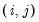
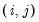

You may perform an F-test of the joint significance of variables that are presently omitted from a panel or pool equation estimated by list. Select and in the resulting dialog, enter the names of the variables you wish to add to the default specification. If estimating in a pool setting, you should enter the desired pool or ordinary series in the appropriate edit box (common, cross-section specific, period specific).
When you click on , EViews will first estimate the unrestricted specification, then form the usual
F-test, and will display both the test results as well as the results from the unrestricted specification in the equation or pool window.
We wish to test the significance of the first differences of the omitted job training grant variables GRANT and GRANT_1. Click on and type “D(GRANT)” and “D(GRANT_1)” to enter the two variables in differences. Click on to display the omitted variables test results.
You may perform an F-test of the joint significance of variables that are presently included in a panel or pool equation estimated by list. Select and in the resulting dialog, enter the names of the variables in the current specification that you wish to remove in the restricted model.
When you click on , EViews will estimate the restricted specification, form the usual
F-test, and will display the test results and restricted estimates. Note that if appropriate, the alternative specification will be estimated using the cross-section or period GLS weights obtained from the unrestricted specification. If these weights were not saved with the specification and are not available, you may first be asked to reestimate the original specification.
Notice that there are three sets of tests. The first set consists of two tests (“Cross-section F” and “Cross-section Chi-square”) that evaluate the joint significance of the cross-section effects using sums-of-squares (F-test) and the likelihood function (Chi-square test). The corresponding restricted specification is one in which there are period effects only. The two statistic values (113.35 and 682.64) and the associated
p-values strongly reject the null that the cross-section effects are redundant.
To perform the Hausman test, you must first estimate a model with your random effects specification. Next, select . EViews will automatically estimate the corresponding fixed effects specifications, compute the test statistics, and display the results and auxiliary equations.
Next we select the Hausman test from the equation menu by clicking on . EViews estimates the corresponding fixed effects estimator, evaluates the test, and displays the results in the equation window. If the original specification is a two-way random effects model, EViews will test the two sets of effects separately as well as jointly.
EViews offers testing for individual and time effects using both F-statistic (likelihood ratio) and Lagrange multiplier (LM) tests. The follow discussion describes LM testing for random effects (
the F-statistic
tests for fixed effects are described elsewhere in this manual).
where is a mixed  distribution with . The weights , and
distribution with . The weights , and  are from Gourieroux et al.
are from Gourieroux et al. (1982), is zero with probability one, and and

are asymptotically independent of each other.
(Note that in practice EViews always employs centered correlations as in Equation (55.25) as this allows for estimation methods where the residuals are not constrained to have zero means in each cross-section. These results may differ from those that would have been obtained using the non-centered correlations in
Equation (55.24). EViews will provide a message informing you when non-zero means are found.)
For a fixed effects homogeneous panel data model with ,  , and , Baltagi, et al.
, and , Baltagi, et al. show that the scaled LM has an asymptotic bias term of resulting from the incidental parameters problem since, for small

, the within residuals are estimated imprecisely. (Note that in
Equation (55.30) we extend the slightly Baltagi,
et al. scaled LM test to unbalanced designs by using the maximum of

for

and requiring that as

).
and clicking on in the import wizard to accept the default settings.
Implicit in our approach to estimation in this example and in the validity of the computed t-statistics is the assumption that the errors for different cross-sectional units are uncorrelated.
The first line contains results for the Breusch-Pagan LM test. EViews shows the test statistic value, test degree-of-freedom, and the associated p-value. In this case, the value of the test statistic, 1027.14 is well into the upper tail of a

, and we strongly reject the null of no correlation at conventional significance levels.
The next two lines present results for the two scaled Breusch-Pagan tests. Both the Pesaran scaled Breusch-Pagan LM, and the Baltagi et al. bias-adjusted LM tests are asymptotically standard normal, and the test statistic results of 49.97 and 49.47 respectively, strongly reject the null at conventional levels. Note that in this example, the bias correction has a relatively small effect on the scaled LM statistic as

and

are of similar magnitude.
To perform the test click on . EViews will then calculate the test statistics for both first and second order correlation and display them in one table.
Once estimated we click on to view the serial correlation test results. The table displays the results for a test of both first and second order serial correlation:
To perform these tests, click on . EViews will display a spool with the bounds statistics for each cross-section in the first node,
The output is a spool object displaying the Hausman test statistic value along with the associated p-value, along with additional output related to the difference of estimators, their variances, and the regression results from each of the mean-group and dynamic fixed effects regressions.
For PMG equations, the symmetry test associated with asymmetric NARDL regressors (“Symmetry Test View”) can be derived for each cross-section. To compute the tests, click on . EViews will produce a spool with the NARDL symmetry test for each cross-section.
The item on the menu allows you to view either a or a . The graph output shows the model selection value for the twenty “best” with the lowest criterion value. The table form of the view displays the log-likelihood value, AIC, BIC and HQ values of the best twenty models in tabular form.
To see the individual cross-sectional short-run coefficients for the each of the cross-section EC equations, you can click on . The resulting display shows a spool containing each cross-section’s coefficients, standard errors,
t-statistics and
p-values.


against the one-sided alternative, but does suggest a “handy” one-sided test statistic:

observations common to i and j, and the pairwise mean


 and periods
and periods  where
where  are unobservable individual effects,
are unobservable individual effects,  are unobservable time effects, and is the remaining idiosyncratic disturbance.
are unobservable time effects, and is the remaining idiosyncratic disturbance. ); and no individual and time effects ().
); and no individual and time effects (). is a matrix of cross-section dummies, is a matrix of period dummies, and
is a matrix of cross-section dummies, is a matrix of period dummies, and  is defined analogously to
is defined analogously to  .
. -dimensional identity matrix and a
-dimensional identity matrix and a  -dimensional unit vector. We also have and , for a
-dimensional unit vector. We also have and , for a  matrix of ones.
matrix of ones. are the residuals obtained from the restricted model. Then defining
are the residuals obtained from the restricted model. Then defining and respectively, both of which are distributed as a under corresponding null.
and respectively, both of which are distributed as a under corresponding null. statistic for
statistic for  against a one-sided
against a one-sided  :
: against
against  we have:
we have: .
.  against a one-sided and for
against a one-sided and for  against . These two statistics are identical to the corresponding Honda UMP statistics.
against . These two statistics are identical to the corresponding Honda UMP statistics. against the one-sided alternative:
against the one-sided alternative: against a one-sided
against a one-sided  , they show that the standardized Honda (or King-Wu statistic) is given by:
, they show that the standardized Honda (or King-Wu statistic) is given by: and their critical values should be more accurate than those of the corresponding unstandardized tests. See Baltagi, Chang, and Li (1999) and Baltagi (2008) for details.
and their critical values should be more accurate than those of the corresponding unstandardized tests. See Baltagi, Chang, and Li (1999) and Baltagi (2008) for details. against the two-sided alternative
against the two-sided alternative in year
in year  ; is the real value of the firm (share outstanding); and is the real value of the capital stock. We estimate this model using ordinary pooled least squares on the specification:
; is the real value of the firm (share outstanding); and is the real value of the capital stock. We estimate this model using ordinary pooled least squares on the specification:
 ) is large. There is, however, considerable evidence that cross-sectional dependence is often present in panel regression settings.
) is large. There is, however, considerable evidence that cross-sectional dependence is often present in panel regression settings. and
and  where is a
where is a  -dimensional column vector of regressors,
-dimensional column vector of regressors,  are the corresponding cross-section specific vectors of parameters to be estimated. (Pesaran points out that while this specification has cross-section specific coefficients, the tests described below are also applicable to the more restrictive fixed and random effects models).
are the corresponding cross-section specific vectors of parameters to be estimated. (Pesaran points out that while this specification has cross-section specific coefficients, the tests described below are also applicable to the more restrictive fixed and random effects models). distribution is obtained for
distribution is obtained for  fixed as
fixed as  for all , and follows from a normality assumption on the errors.
for all , and follows from a normality assumption on the errors. settings. To address this shortcoming, Pesaran (2004) proposes a standardized version of the LM statistic
settings. To address this shortcoming, Pesaran (2004) proposes a standardized version of the LM statistic and then
and then  .
.  , so that the statistic is likely to exhibit size distortion for small
, so that the statistic is likely to exhibit size distortion for small  , and that the distortion will worsen for larger
, and that the distortion will worsen for larger  .
. :
: and in any order.
and in any order. , so that the CD test is likely to have good properties for both
, so that the CD test is likely to have good properties for both  and small, and he provides Monte Carlo evidence to support this claim.
and small, and he provides Monte Carlo evidence to support this claim. is relatively small, we may instead wish to focus on the results for the asymptotically standard normal Pesaran CD test which are presented in the final line of the table. While the test statistic value of 3.25 is significantly below that of the scaled LM tests, the Pesaran CD test still rejects the null at conventional significance levels.
is relatively small, we may instead wish to focus on the results for the asymptotically standard normal Pesaran CD test which are presented in the final line of the table. While the test statistic value of 3.25 is significantly below that of the scaled LM tests, the Pesaran CD test still rejects the null at conventional significance levels. is the number of long-run parameters.
is the number of long-run parameters.